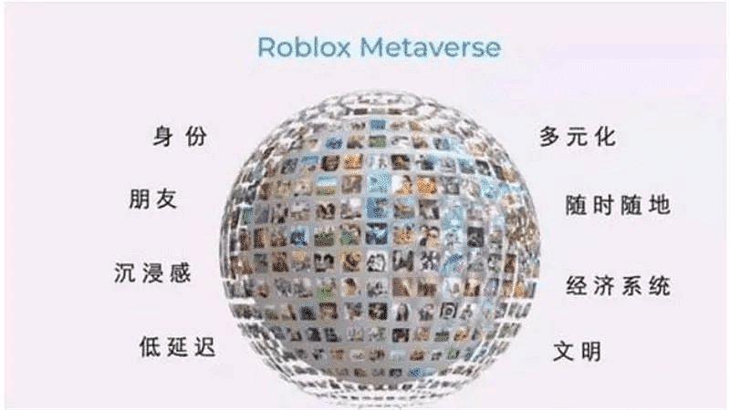
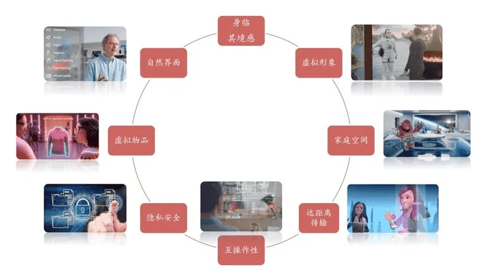
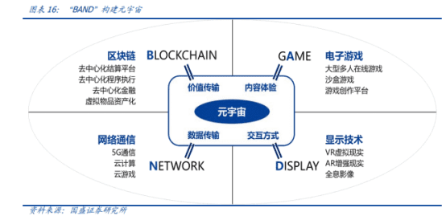
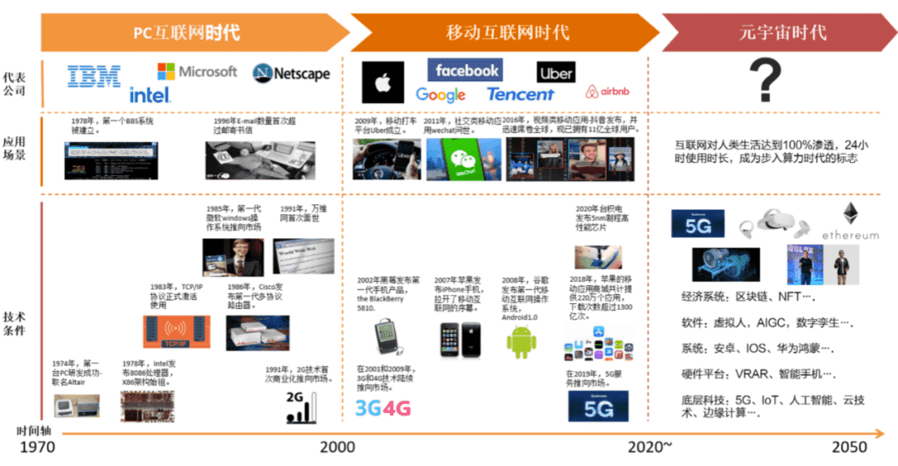
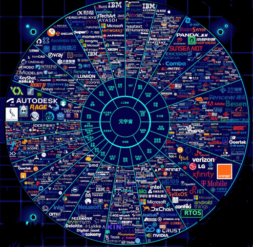
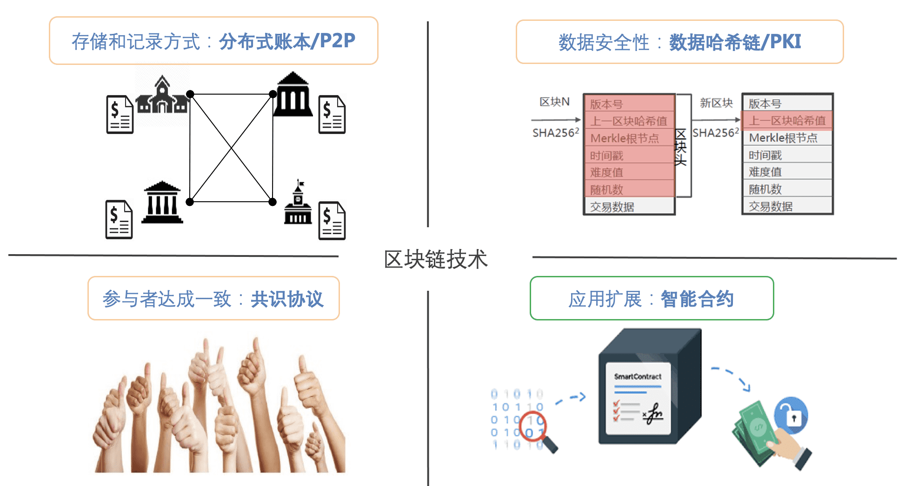
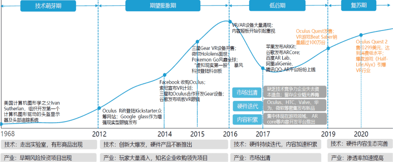
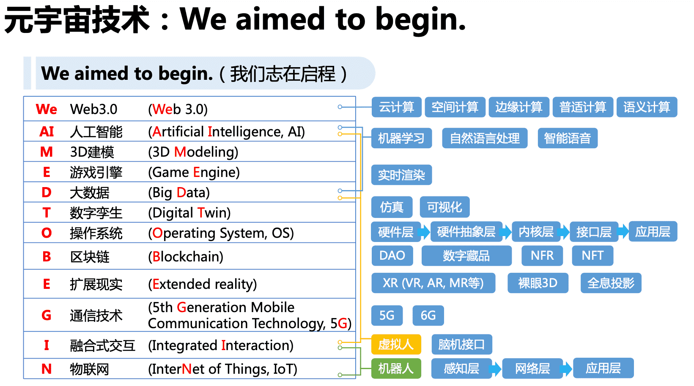
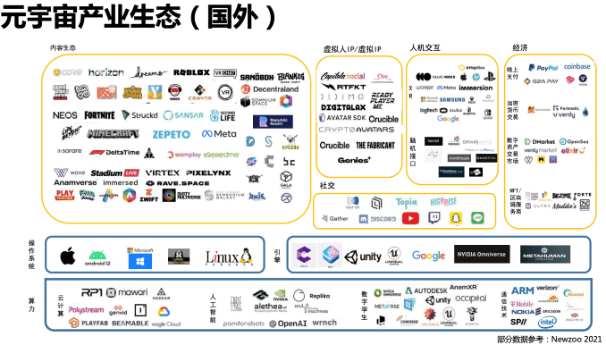
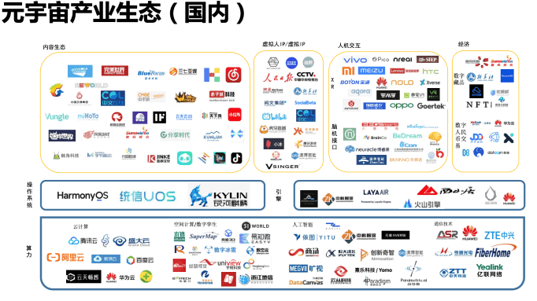

一千个人心中，有一千个元宇宙。
什么是元宇宙
元宇宙（Metaversion）出自1992年出版的科幻小说作家尼尔·斯蒂芬森（Neal Stephenson）的第三部著作《雪崩》（Snow Crash）。
斯蒂芬森创造了一个并非以往想象中的互联网，而是和社会紧密联系的三维数字空间——虚拟实境（Metaverse），与现实世界平行，在现实世界中地理位置彼此隔绝的人们可以通过各自的“化身”进行交流娱乐；
在这个虚拟现实中，人们表现为自己设计的“化身”，从事世俗的（谈话、调情）和非凡的（斗剑、雇佣军间谍活动）活动。像互联网一样，元宇宙是一种集体的、互动的努力，总是在进行，并且不受任何一个人的控制。就像在游戏中一样，人们居住并控制着在空间中移动的角色
定义
元宇宙(Metaverse) 是利用科技手段进行链接与创造，与现实世界映射与交互的虚拟世界，以及具备新型社会体系的数字生态空间。“Metaverse”这个词由meta和verse组成，meta表示超越，verse取自universe，合起来就是“超越宇宙”，被翻译成“元宇宙”。
关于元宇宙的概念，目前并没有一个明确的定义，可以参考一下专家对他的定义。
清华大学新闻学院沈阳教授这样定义元宇宙：
“元宇宙是整合多种新技术而产生的新型虚实相融的互联网应用和社会形态，它基于扩展现实技术提供沉浸式体验，以及数字孪生技术生成现实世界的镜像，通过区块链技术搭建经济体系，将虚拟世界与现实世界在经济系统、社交系统、身份系统上密切融合，并且允许每个用户进行内容生产和编辑。”
北京大学陈刚教授、董浩宇博士这样定义元宇宙：
“元宇宙是利用科技手段进行链接与创造的，与现实世界映射与交互的虚拟世界，具备新型社会体系的数字生活空间。”
理解
- 基础理解：元宇宙是下一代互联网：物联网+区块链+人工智能+高速移动互联网+AR/VR
- 进阶理解：元宇宙是人类社会形态进步，是人类数字生存新形态，是物理生存的实时混合生存状态。国界、组织边界、公司边界一些意义、一些功能上，会趋于消失，跨境跨界合作更普遍、高效、低成本。
- 高阶理解：让地球的价值+信息高度自由流动，让没有信任和社交关系的人和物，低成本、远程、实时互联协作，是人类写作进化的新阶段～
目前关于元宇宙的畅想有一些影视作品可以参考，我们可以观看一下影片，辅助我们理解元宇宙：《阿凡达》 帮助我们理解数字孪生的真实人格人生; 《头号玩家》 帮助我们理解元宇宙现实经济、线上经济和价值的融合互通;《失控玩家》 帮助我们理解元宇宙纯AI人格; 《黑客帝国》 帮助我们理解元宇宙人脑创造和计算能力被AI控制和利用的假想。
关键特征
Roblox 提出了通向元宇宙的7个关键特征:Identity(身份)、Friends(朋友)、Immersiveness(沉浸感)、 Low Friction(低延迟)、Variety(多样性)、Anywhere(随地)、Economy(经济)、Civility(文明)。

- 身份：拥有一个虚拟身份，无论与现实身份有没有相关性，可以自由创造，采用虚拟形象。
- 朋友/社交：在元宇宙当中拥有朋友，可以社交，无论在现实中是否认识。
- 沉浸感：能够沉浸在元宇宙的体验当中，忽略其他的一切。
- 低延迟：元宇宙中的一切都是同步发生的，没有异步性或延迟性。
- 多元化：元宇宙提供多种丰富内容，包括玩法、道具、美术素材等，具有超越现实世界的自由与多元。
- (随时)随地：可以使用任何设备登录元宇宙，随时随地沉浸其中。
- 经济系统：与任何复杂的大型游戏一样，元宇宙应该有自己的经济系统。
- 文明：元宇宙应该是一种虚拟的文明，具备虚拟世界的社会、法度、文明、虚拟“国家”等。
这里面最重要的是“经济体系”和“文明”这两个特征。
八大要素
扎克伯格 提出元宇宙的八大要素： 1）身临其境感（Feeling of Presence）；2）虚拟形象（Avatar）；3）家庭空间（Home Space）；4）远距离传输（Teleporting）；5）互操作性（Interoperability）；6）隐私安全（Privacy and Safety）；7）虚拟物品（Virtual Goods）；8）自然界面（Natural interfaces）

四大特性
社交第一性 元宇宙作为人类社会形态发展新的阶段，基于硬件技术、内容生态的高度发达，开始追求超脱与物理世界层面，实现在虚拟空间之中寻求社交与场景的延展。
- 元宇宙是人类社会形态发展新的阶段
- 每个个体都拥有独立的“数字化身”
- 社交将成为元宇宙的“刚需”
感官沉浸性 沉浸感是元宇宙与现实世界融合的基础，用户在元宇宙的虚拟空间中将拥有“具身的临场感”，并借助硬件、交互技术的进步，在视觉、听觉、触觉、嗅觉等方面实现感官体验的拓展。
- 沉浸式是元宇宙与现实融合的基础
- 虚拟空间需要拥有“具身的临场感”
- 人类认知边界即是元宇宙发展的边界
交互开放性 元宇宙实现了虚拟空间与现实世界的叠加，因此，用户将同时拥有虚拟空间的超现实能力、以及与现实世界的作用力，在元宇宙交互过程中将能够同时作用于虚拟和现实两个空间之内。
- 元宇宙将实现虚拟与现实世界的叠加
- 元宇宙将实现人类感知与交互的升维
- 元宇宙将实现人机共生的交互模式
能力可扩展性 元宇宙在基础设施、标准及协议的不断迭代演进的支撑下，推进多平台融合，并呈现出工具化的发展方向。
- 元宇宙将呈现出工具化的发展方向
- 元宇宙技术为内容创作提供了全新载体
- 每个用户可以元宇宙内实现世界编辑
四大支柱
现阶段构建元宇宙的四大支柱：“BAND” 
- BLOCKCHAIN：区块链技术提供了去中心化的清结算平台和价值传递机制，能够保障元宇宙的价值归属与流转，从而保障经济系统的稳定、高效，保障规则的透明和确定性执行。去中心化的虚拟资产能够跨平台、脱离内容本身进行流通，变得更加“真实”。
- GAME：电子游戏为元宇宙提供交互内容，是元宇宙发展的关键赛道,用户创作成为元宇宙游戏发展的趋势提供了丰富的内容，玩家并非像传统游戏一样成为游戏主策中的提线木偶，游戏UGC模式广受市场认可也改变着人们对虚拟资产的观念。
- NETWORK：网络与算力技术的升级保障了信息的传输与计算能力，5G、AIoT、算力为次时代应用创新打下了坚实基础。云计算是近年来发展最快的科技领域之一，伴随通信速率和云算力的持续升级，云端游戏已经成为现实。
- DISPLAY：超高清及AR/VR设备也实现了持续迭代升级，用户已经可以获得较好的沉浸式体验。
为什么需要元宇宙
互联网
互联网的发展遇到了天花板
截至2021年6月，我国网民规模达10.11亿，互联网普及率达71.6%，然而中国移动互联网人数增长和人均上网时长增长，都在接近停滞。互联网企业迫切需要一个新的叙事逻辑，突破增长的极限。用户在线时长的增长动力，来自两个方面，一是VR等新设备创造更具沉浸感的线上体验，带来新的增量时长，二是更深度的挖掘时间分配，把人们传统意义上仍然花费在线下的时长，转化到线上。
互联网给我们带来了一个平面的、二维的虚拟世界，而元宇宙将会给我们带来一个三维的、立体的虚拟世界，其中的时间和空间都可以被重组。新技术带来了虚拟人物、数字化身等数字化、虚拟化的人类。现在全球有70亿人口，而这些虚拟的偶像和数字化身，数量可能达到700亿。

工业
工业领域的发展也需要突破瓶颈
截至2021年9月，全国机动车保有量达3.90亿辆，全国机动车驾驶人4.76亿名。2021年中国人均汽车保有量，已经超过了我国在1980年的人均自行车拥有量。机器的生产效率不再制约生产力的提升，人的知识、经验、创新力和服务能力成为瓶颈。
技术即将打败人的经验，机器的知识终将超越人的知识，元宇宙可以作为一个宏大愿景，解决知识的产生、利用和规模化复制的瓶颈，实现工业企业价值创造的新突破。在虚拟的数字空间，各种技术不断积累动态数据，重构生产过程。数字孪生在物理世界与数字环境之间建构起关系，对生产过程进行回溯和预测。元宇宙的实现重点在于仿真和自主控制。
金融
金融领域需要一次新的金融浪潮
- 第一次金融浪潮，形成企业债券市场。瓦特虽然改良了蒸汽机，但是普及并没那么容易。英国依靠中央银行和商业银行体系，最早推出了企业债券，为蒸汽机的发展提供了大规模、可持续、低成本的资金。
- 第二次金融浪潮，形成了证券交易所。爱迪生发明电灯，福特创造了T型车，洛克菲勒创办标准石油公司，背后都离不开纽约证券交易所，用股权融资代替债券融资，投资银行完成了对实业的布局。
- 第三次金融浪潮，风险投资模式兴起。风险投资体系在支撑技术创新和产业升级方面，起到了突出的作用，助推了信息时代的崛起。
随着金融与实体产业的关系越来越难以分开，无数个普通人的经济金融活动，推动了新一轮金融浪潮的涌动。
比如用户创作的UGC内容，为互联网提供了价值；用户愿意用自家的服务器为邻居提供存储空间，也对互联网提供了价值。用户做了贡献，创造了价值，收益应该属于用户。用户有什么办法来确认这个收益呢？这时就离不开区块链。
通过过去12年的实践，区块链已经为元宇宙建立了一个非常完整的运行良好的去中心化的金融市场体系，元宇宙正是建立在这样一个金融市场体系上。
关键技术

我们把这六大技术支柱的英文组合成一个比较有意思的缩写BIGANT，趣称为“大蚂蚁”。
- 区块链技术（Blockchain） 是建立信任、达成共识的重要技术，也是构建元宇宙虚拟资产体系的基础。
- 交互技术（Interactivity） 是为元宇宙用户提供沉浸式虚拟现实体验的阶梯。
- 游戏技术（Game） 是元宇宙初期形态的最成熟的呈现方式，同时也是元宇宙初期最重要的变现途径。
- 人工智能技术（AI） 是元宇宙中生产力与自主运行最重要的技术支撑。
- 网络与运算技术（Network） 是元宇宙在物理世界中的承载者，也是六大关键技术中，与现实世界关联最为紧密的技术。
- 物联网技术（IoT） 是元宇宙与现实空间融合的媒介，为虚拟共生提供保障，意识元宇宙走向产业化的桥梁。
区块链技术(B)
区块链（Blockchain）是去中心化、去信任化、不可篡改和抵赖的分布式账本技术。NFT(Non-Fungible Token,非同质化货币) 作为目前区块链相关技术中较为成熟的技术，在区块链框架下能够作为代表数字资产的唯一加密货币令牌，将是支撑元宇宙经济体系最重要的基础，元宇宙一定是去中心化的，用户的虚拟资产必须能跨越各个子元宇宙进行流转和交易，才能形成庞大的经济体系。 
交互技术(I)
交互技术(Interactivity)是利用传感器、音视频、图形界面等方式，大幅强化人、机感知能力的技术，亦是为元宇宙用户提供沉淀式虚拟现实体验的阶梯。
通过AR、VR等交互技术提升游戏的沉浸感。人体交互技术是制约当前元宇宙沉浸感的最大瓶颈所在，交互技术分为输出技术和输入技术。输出技术包括头戴式显示器、触觉、痛觉、嗅觉甚至直接神经信息传输等各种电信号转换于人体感官的技术；输入技术包括微型摄像头、位置传感器、力量传感器、速度传感器等。复合的交互技术还包括各类脑机接口,这也是交互技术的终极发展方向。
VR/AR产业近几年逐渐克服硬件和内容生态的核心短板，产业将打破“爆款内容匮乏，硬件销售萎靡“的恶性循环，进入复苏期。

电子游戏技术(G)
游戏(Game)是依托于电子设备平台而运行的交互形态，是元宇宙初期形态的最成熟的呈现方式。游戏是元宇宙初期最重要的内容创作平台、社交流量入口，亦是元宇宙3D场景交互的原点，同时也是元宇宙初期的重要变现手段。
电子游戏技术既包括游戏引擎相关的3D建模和实时渲染,也包括数字孪生相关的3D引擎和仿真技术，前者是虚拟世界大开发解放大众生产力的关键性技术，后者是物理世界虚拟化数字化的关键性工具,同样需要大幅把门槛拉低到普通民众都能操作的程度,才能极大加速真实世界数字化的进程。
人工智能技术(A)
人工智能技术(AI)是通过算法模型、硬件算力、大数据训练共同构造的，以人类智能相似的方式作出反应的智能机器，是元宇宙中生产力与自主运行最重要的技术支撑，他将是未来承载元宇宙运行的底座。
人工智能可以降低内容创作门槛，提升游戏的可延展性。人工智能技术在元宇宙的各个层面、各种应用、各个场景下无处不在。包括区块链里的智能合约、交互里的 AI 识别、游戏里的代码人物、物品乃至情节的自动生成、智能网络里的 AI 能力、物联网里的数据 AI 等,还包括元宇宙里虚拟人物的语音语义识别与沟通、社交关系的AI推荐、各种 DAO 的 AI 运行、各种虚拟场景的 AI 建设、各种分析预测推理等。
网络及运算技术(N)
网络及运算技术(Network)为了满足元宇宙对网络高同步低延时的要求，从而用户可以获得实时、流畅的完美体验。根据独立第三方网络测试机构Open Signal的测试数据，4G LTE的端到端时延可达98毫秒，满足视频会议、线上课堂等场景的互动需求，但远不能满足元宇宙对于低时延的严苛要求。VR设备一大难题是传输时延造成的眩晕感，其指标为转动头部到转动画面的延迟，5G带宽与传输速率的提升能有效改善时延并降低眩晕感。
物联网技术(T)
物联网技术(Internet of Things)既承担了物理世界数字化的前端采集与处理职能,同时也承担了元宇宙虚实共生的虚拟世界去渗透乃至管理物理世界的职能。只有真正实现了万物互联,元宇宙实现虚实共生才真正有了可能!物理网技术的发展,为数字孪生后的虚拟世界提供了实时精准持续的鲜活数据供给,使元宇宙虚拟世界里的人们足不出网就可以明察物理世界的秋毫。
也有更细化的版本：We aimed to begin 
实现路径
元宇宙是一个循序渐进的过程
阶段一：AR/VR应用扩展
随着硬件的更新和底层技术的迭代，一些简单的应用场景会开始出现，比如游戏、建模、网上购物等，在这段时间里，元宇宙的概念仅仅是提升一些现有服务的体验，它只会是我们生活中的一小部分而已。
阶段二：提升社交和娱乐
随着技术的发展，越来越多的服务可以应用到元宇宙这个概念。
这时，它主要会给社交和娱乐这两大服务提供更好的体验，比如，你可以通过虚拟影像的方式跟远在异国他乡的亲人聊天，虚拟影像会投影对方的表情，肢体语言，就跟坐在你对面一摸一样。另外沉浸式娱乐将会成为主流，除了我们能够想象到3D场景游戏外，还比如，看球赛时，你再也不用对着一个大屏幕了，看你戴上VR头盔时，就可以实时看到NBA球星在你面前投篮，就像坐在场地的第一排看球一样。
阶段三：虚拟社会，自成经济体
当元宇宙技术趋于成熟，使用的人和参与的企业都越来越多后，元宇宙就很有可能进化成一个虚拟的社会，并自成一个经济体。
这时，元宇宙就不会再局限于社交和娱乐等基本活动，它几乎可以取代真实世界中的一切事情，在虚拟世界中，将会有真正的工作、商业买卖、虚拟的资产和货币、甚至可以会出现独立的政府，而这一切，又可以与真实世界互通，届时将会出现新的基于元宇宙社会的应用，也会有基于元宇宙的职业。
阶段四：虚拟和现实融为一体
到了元宇宙的终极形态，虚拟和现实可能就已经完全融为一体了。
这时，人类能在是虚拟世界中，体验现实世界所有能够尝试的体验，甚至可以做到在真实世界中所做不到的事情，人类是都充满想象力的，之前我们的幻想只能停留在视觉和听觉这两个维度上，比如我们可以把幻想拍成电影供大家欣赏，但是在元宇宙的终极形态中，虚拟技术也许可以控制人类的大脑皮层，实现味觉、嗅觉、触觉等感官的模拟，让你坐在自家沙发，就可以感受到吃到虚拟美食的快感、深处花圃中的芬芳或者遨游太空的失重感等等。
如果元宇宙的终极形态可以实现，那么很显然，现在现实社会中的所有活动都可以在元宇宙中实现，反过来，元宇宙中的活动现实社会中却不一定能够做到，从这个角度来看，元宇宙的经济规模必然会大于现实世界。
产业生态
随着芯片技术的提升，5G技术的普及，云计算、区块链技术的成熟，元宇宙的发展也有了足够的土壤，另外资本也在加速进军这一领域，近几年包括Facebook，微软，苹果等科技巨头都相继入场，尤其是Facebook以及All in元宇宙，这必将会推动元宇宙的发展，并吸引更多的资金来进场，毕竟元宇宙看上去还是一个数十万亿的产业，嗅觉敏感的资本必然不会放过这样的机会。
国外产业生态

国内产业生态

写在最后
末路 or 天堂？
元宇宙带领人类走向穷途末路？或者走向天堂？
刘慈欣
- 高度致幻的“精神鸦片”
- 如果元宇宙走在星际文明之前，现实将崩塌
- 引导人类走向死路
凯文凯利
- 未来科技发展方向，就是“镜像世界”，元宇宙
- 元宇宙是人类的归宿，无论走不走星际文明
罗森博格
- 标签化：根据权力者好恶，标签化国家或个人
- 过滤层：元宇宙掌控者付费过滤信息，失去公平
割韭菜 or 新赛道？
元宇宙走红后，各种套路、骗局乱象滋生，一些知识付费项目打着元宇宙的口号牟利，并声称“未来只有元宇宙这一条路”；一些企业忙于抢注各种相关商标，企图从中分得“一杯羹”。
元宇宙虽然宏大，但仍处于“讲故事”的阶段。我们要理性看待对元宇宙的设想，因为每一次技术变革都不是一蹴而就的，这个过程一定会经历疯狂，失望，再疯狂的过程，就像00年的互联网泡沫，18年的区块链泡沫一样，我相信元宇宙概念，不久后也会经历同样的过程，也会出现大量蹭热度的公司，也会出现大量不理性的投资者，我们要做的，就是要时刻保持清醒的头脑，坚持独立思考，不要在市场疯狂的时候随大流。
人民日报称元宇宙“是镜花水月还是触摸得到的未来，是资本炒作还是新的赛道，是新瓶装旧酒还是科技新突破，下结论前不妨‘让子弹飞一会儿’”